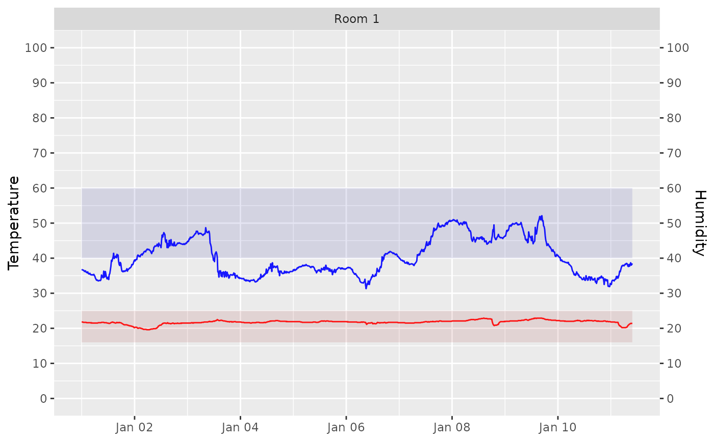
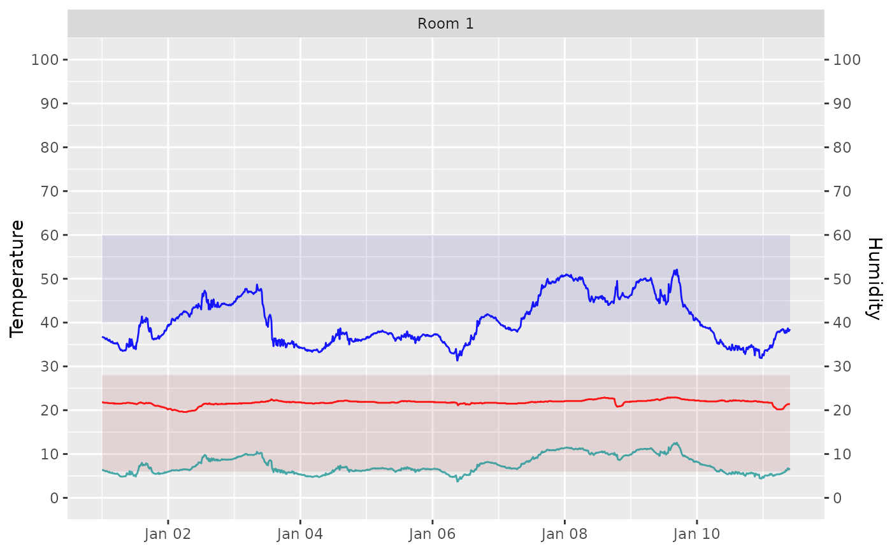

Use this tool to produce a simple temperature and humidity plot with optional background bands showing target temperature and relative humidity ranges. Optionally, add a function to graph, e.g. `calcDP`, `calcAH`, etc.
Usage
graph_TRH(
mydata,
Date = "Date",
Temp = "Temp",
RH = "RH",
facet_by = "Sensor",
LowT = 16,
HighT = 25,
LowRH = 40,
HighRH = 60,
y_func = "none",
...
)Arguments
- mydata
A data frame containing date (Date), temperature (Temp), and relative humidity (RH) columns.
- Date
The name of the column in mydata containing date information ("Date").
- Temp
The name of the column in mydata containing temperature data ("Temp").
- RH
The name of the column in mydata containing relative humidity data ("RH").
- facet_by
Name of categorical column to facet by; defaults to "Sensor".
- LowT
Numeric lower bound of temperature range (default 16).
- HighT
Numeric upper bound of temperature range (default 25).
- LowRH
Numeric lower bound of relative humidity range (default 40).
- HighRH
Numeric upper bound of relative humidity range (default 60).
- y_func
Character string specifying a function to apply to temperature and humidity columns (e.g. "calcAH"). Default is "none".
- ...
Additional arguments passed to y_func.
Examples
# mydata file
filepath <- data_file_path("mydata.xlsx")
mydata <- readxl::read_excel(filepath, sheet = "mydata", n_max = 1000)
# Basic use with background ranges
graph_TRH(mydata)
#> Scale for y is already present.
#> Adding another scale for y, which will replace the existing scale.

# Add dew point and customise
graph_TRH(mydata, y_func = "calcDP", LowT = 6, HighT = 28)
#> Scale for y is already present.
#> Adding another scale for y, which will replace the existing scale.
